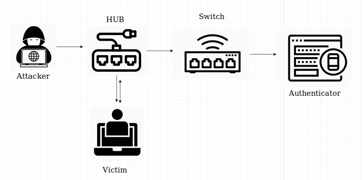
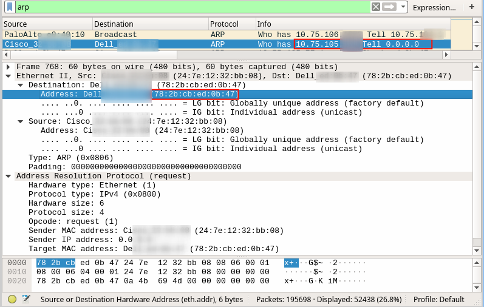
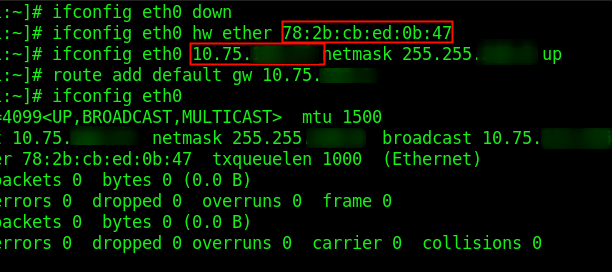
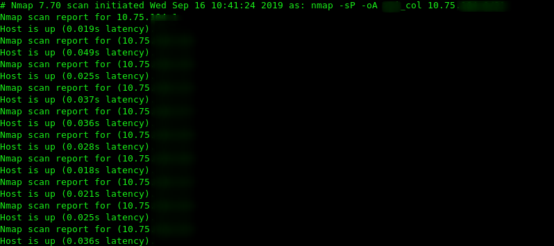

opcod3r's blog
Infosec/Dev/CC Things
In this post i’ll describe how to bypass NAC ( Network Access Control ). During an internal pentest, I had a problem connecting to the client network ( all network devices 802.1x (including VoIP devices), after a few hours trying to find out why, I found out that the client had implemented NAC, but what is Network access protocol (NAC) ?
Network Access Control (NAC) is a solution used on corporate networks to prevent, or even hinder, unauthorized hosts from accessing internally available services and systems. This access restriction can occur only at the network layer, preventing an IP address from being obtained through the DHCP service, or completely segmenting the wrong hosts from the valid ones at the link layer level. Below are descriptive steps to circumvent NAC, remembering that this does not work in all cases.
1º Connect a valid host to hub
2º Attach the attacker’s host to the hub
3º Intercept the ARP frames to identify the valid host MAC address
4º Connect hub / switch to the network point
5º Wait for authentication of valid host
6º Clone the valid host MAC address into the attacker’s host
7º Enter the victim’s IP address statically in the attacker’s host
This will allow the attacker to communicate with corporate networks without requiring authentication. The following illustration shows the diagram representing such a bypass of the NAC:

After setup, wireshark was used to get IP and MAC address from ARP packets. As ilustrate bellow

The next step was to clone the victim’s MAC address, IP address, configure network settings, and then connect the attacker’s machine to the hub. The following illustration shows when the required NAC bypass settings are made:

As a proof of concept concept, a scan was performed on the 10.75.X.X/X subnet to find available hosts with the nmap tool. The image below reveals the fact:

Thats all folks.. If you would like more posts related to internal pentest, leave your comment at